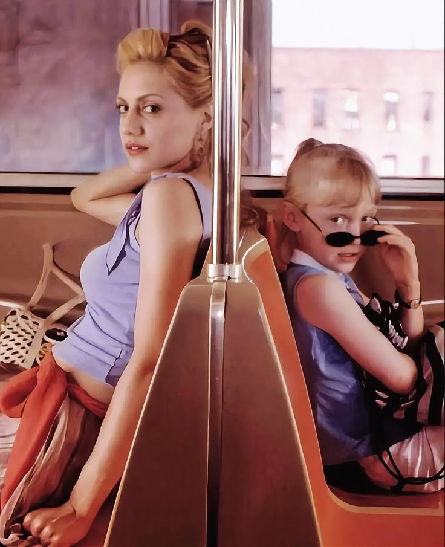
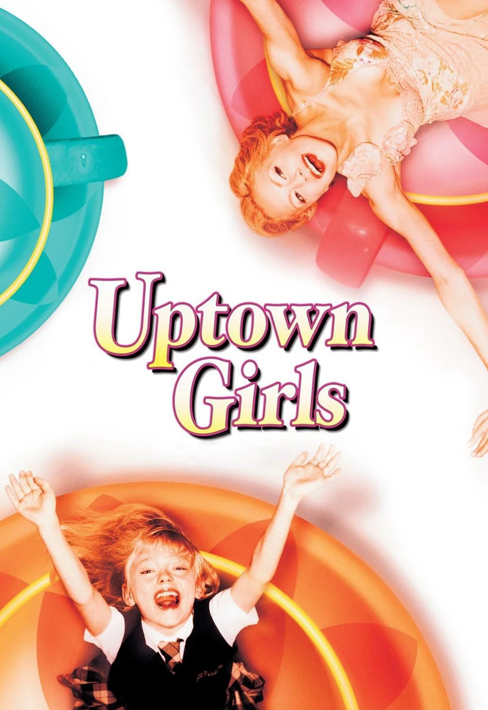

Comedy, Drama, Romance
2003
92 minutes
Boaz Yakin
Uptown Girls follows Molly Gunn, the carefree daughter of a late rock legend whose extravagant lifestyle comes to an abrupt end after she loses her inheritance. Taking a job as nanny to the precocious and tightly wound Ray Schleine, Molly and Ray form an unlikely friendship that teaches them both about responsibility, family, and growing up.